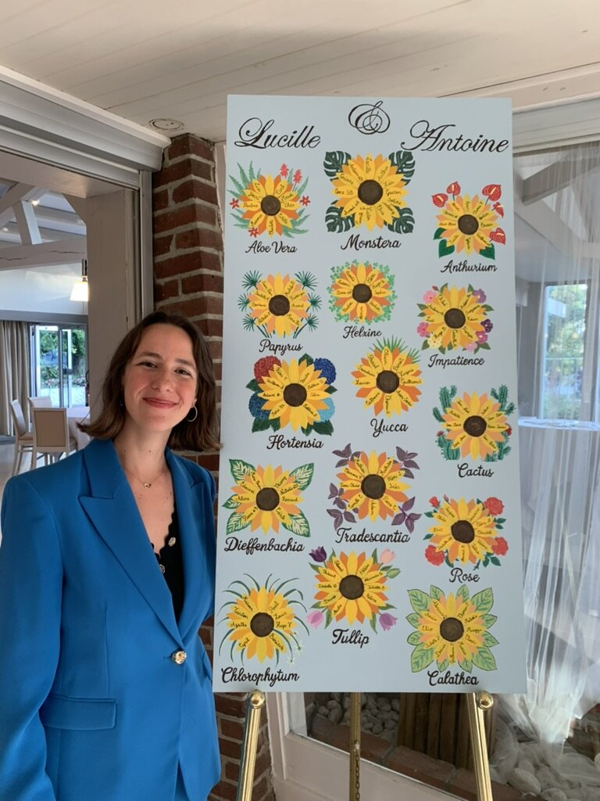
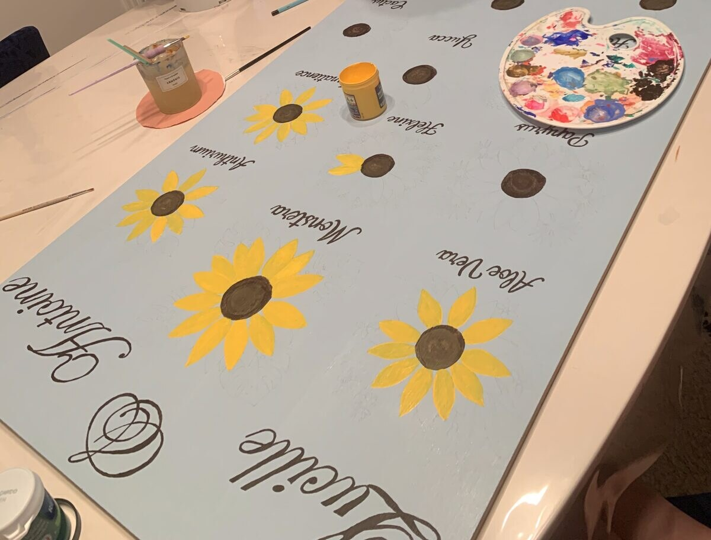

L'atelier

Je m'appelle Célia. Chez moi, à Paris, je peins des plans de table de mariage — et je fabrique des petites pièces à porter et à offrir.
Ce sont deux gestes différents sur la même table. Les plans de table demandent des semaines et se pensent à plusieurs, avec les mariés. Les créations se font sur mon temps libre, une pièce à la fois. Je fais attention aux petits détails, à l'harmonie des couleurs et au respect du thème s'il y en a.
Ce qui ne change pas : rien n'est fait en série, rien n'est parfaitement régulier, et chaque pièce ne ressemble qu'à elle-même.
Il y a une première phase où l'on échange : vous me transmettez vos goûts, vos couleurs, votre vision du plan de table si vous en avez une, et je peux vous donner des idées si vous le souhaitez. Puis je compose. C'est un travail de confiance — c'est ce qui me laisse la liberté de réaliser quelque chose de vivant plutôt que d'exécuter une maquette.
Si un modèle que j'ai déjà fait vous plaît et que vous en voulez exactement le même, je peux tout à fait le réaliser de nouveau. Ce sont des pièces uniques, donc quelques détails différeront toujours.
Pour les couleurs, je vous demande toujours si vous avez une préférence. Si oui, je m'y tiens. Si vous préférez me laisser décider, je choisis d'après votre faire-part, votre thème ou vos goûts. Ensuite viennent les contours, les aplats, puis les détails, et les noms de tables calligraphiés un par un. Rien n'est parfaitement régulier, et c'est précisément l'intérêt.
Le Voyage combine une carte peinte au centre et des papiers cartonnés imprimés cloués autour. La carte est celle que vous voulez : le monde, un continent, une mer, un pays, une île. C'est la formule la plus lisible le jour J.
Le Signature pousse le geste jusqu'au bout : une pièce unique, composée d'après le thème de votre mariage et peinte entièrement à la main, chaque prénom compris. C'est une pièce que l'on peut garder, voire accrocher en décoration après le mariage.
Entre deux plans de table, la grande table change de métier. La boîte à perles remplace les pots de peinture, et je fabrique des choses plus petites : des bracelets enfilés perle après perle ou tressés fil par fil, des marque-pages dessinés puis coloriés au feutre, des verres en mosaïque montés tesselle par tesselle, des bananes cousues dans des coupons de tissu, de petits sacs brodés.
C'est un travail sans commanditaire et sans échéance : je pars d'une couleur qui me plaît et je vois où elle mène. Une série de bracelets naît souvent d'un sachet de perles acheté sans raison. Quand un coloris est épuisé, le modèle ne revient pas — c'est pour ça que la plupart des pièces existent en un seul exemplaire.
Certaines partent en cadeau, avec un prénom écrit sur les perles. Les autres sont dans les créations, et je fabrique aussi sur commande si vous avez une idée précise.
